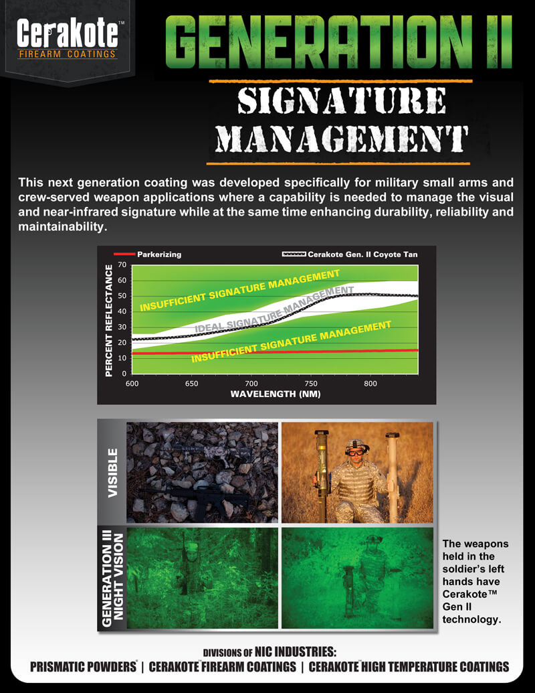

Cerakote gun Coatings Generation II Signature Management Coatings.
Reduced Weapons Visual
-
IR Signature Detection
Liquid Ceramic Coatings for Optimum Performance and
Reduced Weapons Signature
POC: Leah Taylor, PhD; 541.826.1922; leah@nicndu
stries.com
Introduction
Advancements in camouflage and signature
management technologies significantly improved
soldier survivability. Signature management
technology employed in combat uniforms and
tactical vehicle paints, substantially reduced
detection by enemy combatants in both day and
night operations. While significant improvements
have been made to help the warfighter avoid
detection, little has been done to reduce the non-
firing signatures of individual and crews-served
weapon systems, accessories and mounts
.
Traditional flat, black surface treatments such as
phosphate, anodize, black oxide, and other processe
s
in use today offer no visual, near-infrared, or the
rmal
signature management capability. The lack of these
important capabilities leaves warfighters vulnerabl
e
to detection thereby placing them at risk during da
y
and night combat operations.
Figure 1
. Black surface treatments do not provide either
visual or near-IR signature management.
Technology Offering
Recognizing the need to improve weapon system
signature management capabilities, NIC Industries,
Inc. leveraged its proven civilian Commercial Off-
The-Shelf (COTS) ceramic-based firearm coating,
marketed under the trade name Cerakote
TM
and
developed a second generation material, known as
Cerakote
TM
Gen II. This next generation coating
was developed specifically for military small arms
and crew-served weapon applications where a
capability is needed to manage the visual and near-
infrared signature while at the same time enhancing
durability, reliability and maintainability.
In addition to the signature management capability,
Cerakote
TM
Gen II offers superior wear and
corrosion resistance under the wide variety of
adverse environmental conditions likely to be
encountered in all theaters of operation. An added
feature of Cerakote
TM
is that it can be applied to a
variety of material substrates. This unique featur
e
allows the coating to be applied to legacy and newl
y
manufactured weapon systems, as well as
accessories, and mounts.
Visual Signature
The Cerakote
TM
GEN II family of coatings offers the
user visual signature camouflage that can be
manufactured to custom color standards (i.e FedStd,
Pantone, etc). For operations conducted during
normal daylight hours, signature management is
accomplished through the application of an
unlimited array of camouflage colors and patterns.
Some of these different camouflage options are
shown in Figure 2.